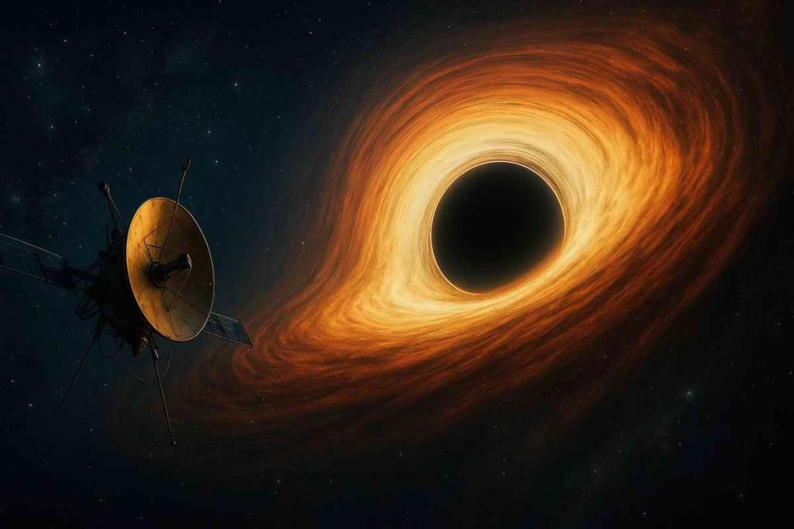

Что такое горизонт событий и почему оттуда не возвращаются?
Горизонт событий — это невидимая граница вокруг черной дыры. Это точка невозврата. Как только объект пересекает эту черту, гравитация становится настолько сильной, что для возврата назад потребовалась бы скорость, превышающая скорость света.

Интерактивная викторина:
Что может вырваться из-за горизонта событий черной дыры?